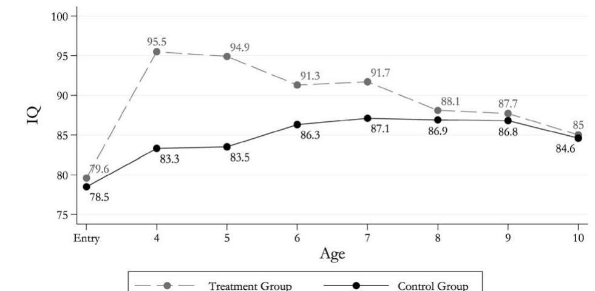
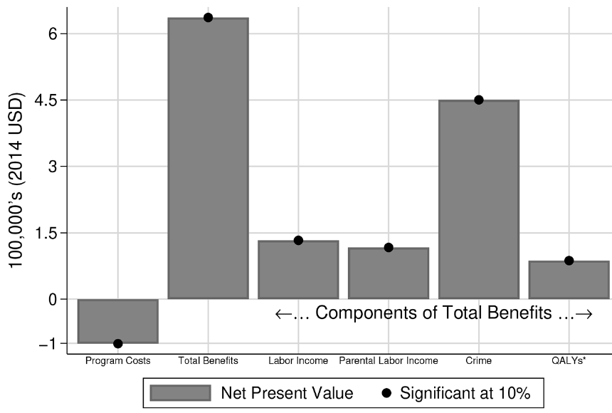

From lecture 6: \[ \theta_{t+1} = \left[\gamma I_{t}^{\phi} + (1-\gamma)\theta_{t}^{\phi}\right]^{1/\phi} \]
What do you think the model says about an early intervention that raises \(\theta_1\)?
Keep these four points in mind: they will help us reconcile the evidence.
From James J. Heckman et al. (2010b):
Selected treatment-control comparisons (James J. Heckman et al. 2010b, Table 2):
| Outcome | Age | Female C | Female T | Male C | Male T |
|---|---|---|---|---|---|
| Sample size | 26 | 25 | 39 | 33 | |
| HS graduation | 27 | 31% | 84% | 54% | 48% |
| Employed | 40 | 82% | 83% | 50% | 70% |
| Yearly earnings | 40 | $20,345 | $24,434 | $24,730 | $32,023 |
| Ever on welfare | 26–40 | 41% | 50% | 38% | 20% |
What do you notice? Effects differ a lot by sex and by outcome, and samples are tiny.

Source: Cunha et al. (2006), Figure 14A. By age 10 the IQ gap is gone, yet the adult outcomes differ.
Critics raised serious concerns (James J. Heckman et al. 2010b):
Main findings from James J. Heckman et al. (2010b):
What do you think? Is a 7–10% return “large”? Compare with returns to a year of schooling.
From García et al. (2020):
The problem: participants are only observed to their mid-30s. How do we value lifetime benefits?
Notice the connection to our course: the forecast uses a model, not just the experiment.

García et al. (2020), Figure 3: net present values per participant (3% discount rate, 2014 dollars).
From Cunha et al. (2006):
What do you think? What did the control group children do instead?
From Kline and Walters (2016), first year of the experiment:
| Control (no offer) | Offered Head Start | |
|---|---|---|
| Other preschool centers | 31.5% | 8.3% |
| Home care | 55% | 9.5% |
Let \(h\) = Head Start, \(c\) = competing preschool, \(n\) = home care. Let \(S_c\) be the share of compliers drawn from competing preschools.
\[ \begin{aligned} \text{LATE}_h = {} & S_c \cdot E[Y(h)-Y(c)\mid c\text{-complier}] \\ & + (1-S_c)\cdot E[Y(h)-Y(n)\mid n\text{-complier}] \end{aligned} \]
Gray-Lobe, Pathak, and Walters (2023) study Boston’s public preschool using admission lotteries:
Same pattern as Perry: test-score effects fade, but long-run outcomes improve.
Durkin et al. (2022) study Tennessee’s Voluntary Pre-K program:
What do you think could make a pre-K program harmful?
Suppose the effect of Head Start relative to home care is \(0.36\) SD, and relative to another preschool is \(0\) SD.
The Jamaica early childhood stimulation trial (Walker et al. 2022):
A very cheap intervention with very large, long-lasting effects. Can it be done at scale?
Attanasio et al. (2020):
The paper estimates a production function: \[ \theta_{t+1} = f(\theta_t, \theta^{mother}, X_t, Y_t) \]
where \(X_t\) = material investment (toys, books), \(Y_t\) = time investment.
What do you think? Does fadeout here mean the same thing as fadeout in Perry?
Carneiro et al. (2024) evaluate Nadie es Perfecto (“Nobody’s Perfect”):
Small effects, but at very low cost and for a program already running at national scale.
Let \(\ln\theta_{t+1} = a\ln\theta_t + b\ln I_t\) with \(a = 0.8\).